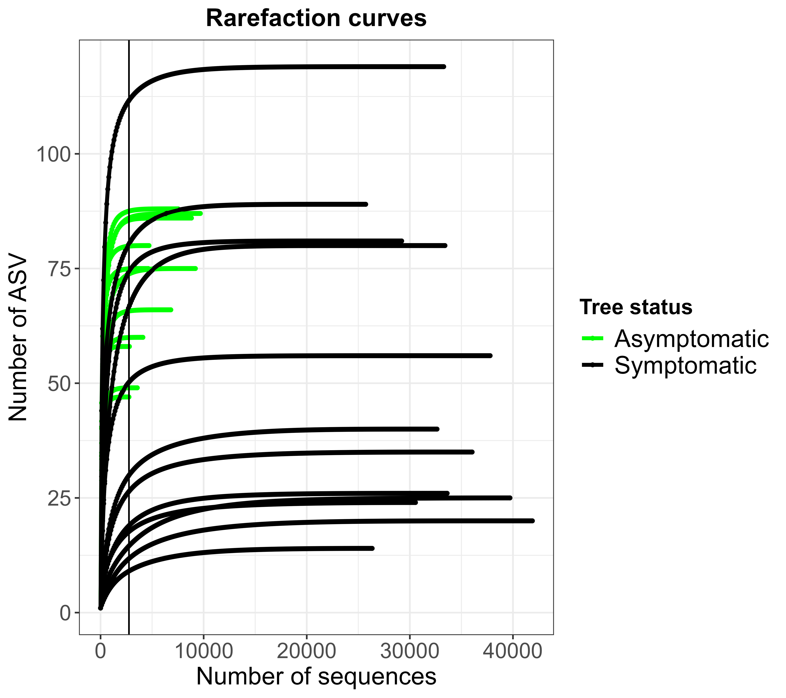
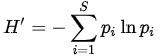
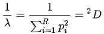
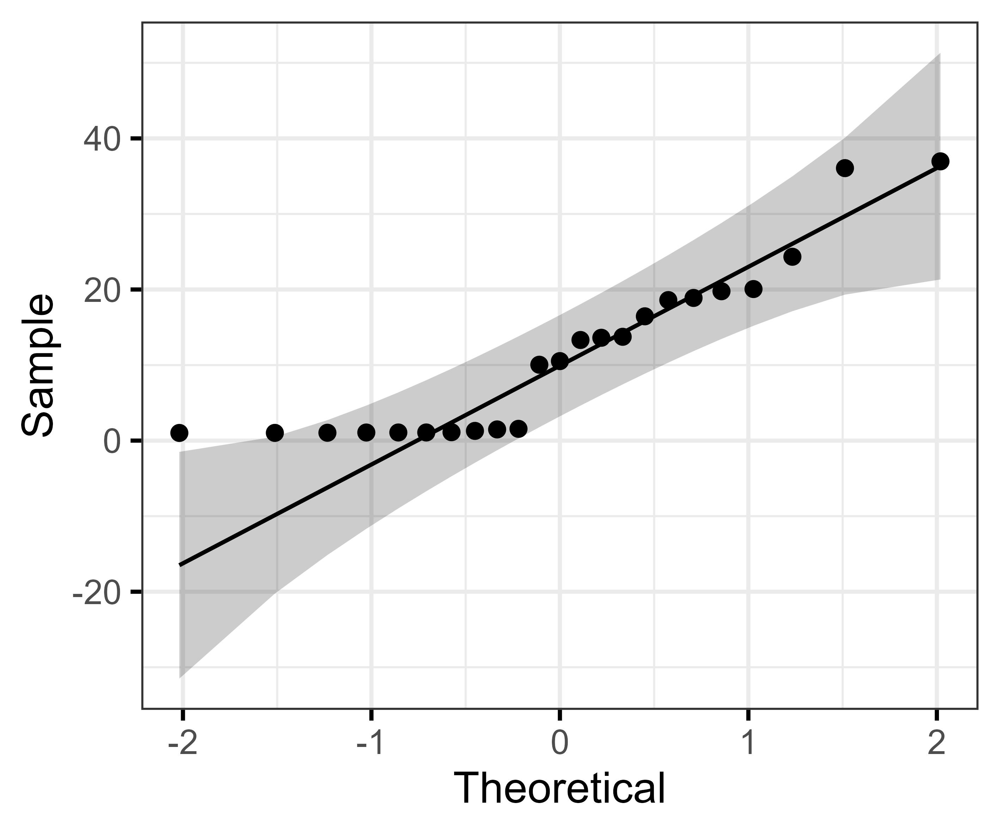
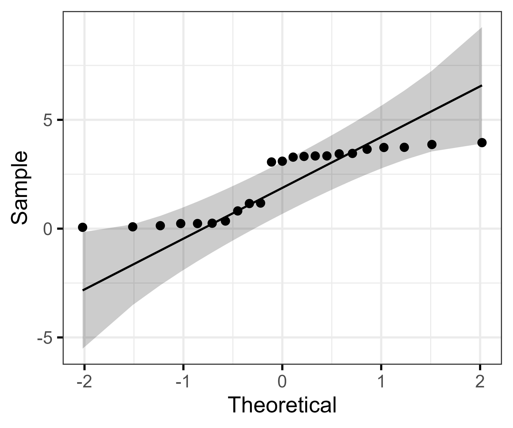
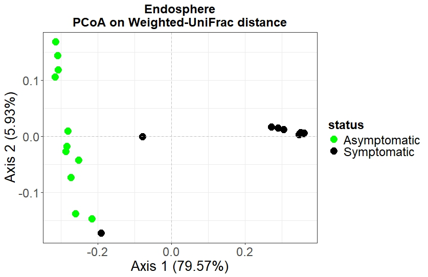
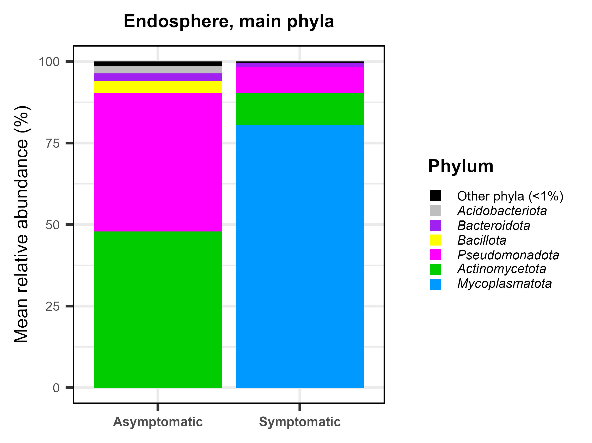

install.packages("devtools")#es necesario instalarlo para instalar algunos paquetes alojados en GitHub en vez de en CRAN
library(devtools)
if (!requireNamespace("BiocManager", quietly = TRUE))
install.packages("BiocManager")
BiocManager::install(c("BiocGenerics", "ANCOMBC", "phyloseq","edgeR","microbiome"))#necesarios para que micro4all funcione correctamente
library(BiocGenerics)
library(ANCOMBC)
library(phyloseq)
library(edgeR)
library(microbiome)
install_github("pmartinezarbizu/pairwiseAdonis/pairwiseAdonis")#descarga desde GitHub
library(pairwiseAdonis)
install_github("nuriamw/micro4all")#descarga desde GitHub
library(micro4all)
install.packages("tidyverse")
library(tidyverse)
install.packages("ggpubr")
library(ggpubr)
install.packages("rstatix")
library(rstatix)
install.packages("gdata")
library(gdata)Analisis comunidades bacterianas
0. Presentación del proyecto
En este manual encontrareis todas las directrices para el análisis de las comunidades bacterianas de la endosfera de dos tipos de pinos: pinos con síntomas de decaimiento forestal (NSD) y pinos asintomáticos (ASH). Cada grupo de muestras está formado por 12 réplicas.
1. Instalación de paquetes
Instalaremos varios tipos de paquetes para poder hacer todos nuestros análisis:
-Rtools: se trata de una herramienta de Windows necesaria para compilar paquetes en R que están en C/C++, por lo que hay que descargarlo de este link e instalarlo como un programa de Windows. Por habernos descargado la versión 4.5 de R, tenemos que descargar RTools 4.5
-BiocManager: es un paquete de R que permite manejar paquetes del proyecto BioConductor (proyecto colaborativo para el desarrollo de paquetes a usar en análisis bioinformáticos, haz click aquí para conocer más al respecto).
-Paquetes disponibles en GitHub: algunos paquetes no se encuentran en el repositorio CRAN ni en BioConductor, sino en GitHub (desarrollados por otros usuarios y puestos allí a disposición de toda la comunidad de R).
-Paquetes disponibles en CRAN: paquetes clásicos que se encuentran en el repositorio CRAN.
2. Preparación de los datos
Ya tenemos las secuencias obtenidas por Illumina MiSeq limpias y filtradas, por lo que se trata de secuencias de calidad. Sin embargo, todavía debemos preparar los datos para su análisis.
En primer lugar, debemos crear una tabla de metadatos (se conocen como datos sobre los datos). En ella debemos incluir información sobre nuestras muestras, por ejemplo: la réplica correspondiente, compartimento de la planta, condición del arbol (son/sin síntomas). En proyectos más complejos debemos introducir el máximo de información posible que nos permita agrupar las muestras en diferentes tipos de grupos o categorías, e incluso detectar patrones de asociación desconocidos.
Important
Es importante que en la tabla de metadatos, las muestras estén en el mismo orden que están en la tabla de ASV, y que el nombre de las muestras sea idéntico en ambas tablas.
En este caso, partiremos de una tabla ya hecha, por lo que solo tendremos que cargarla.
Note
Recuerda que antes de empezar a trabajar, debes indicarle cuál es tu directorio de trabajo. Recuerda también introducir la tabla en tu directorio de trabajo, de lo contrario, tendrás que indicarle con código la ruta completa y es más probable cometer errores.
metadatos = read.table("metadata.txt", sep="\t", header=TRUE)
row.names(metadatos) = metadatos$samples3. Creación de objeto tipo phyloseq
Se recomienda crear objetos phyloseq para analizar comunidades microbianas, ya que es el tipo de objeto con el que trabaja el paquete phyloseq.
Los objetos phyloseq se encuentran formados por una tabla de ocurrencias de los ASVs (tabla de ASVs), tabla de taxonomía, metadatos y un árbol filogenético.
Note
Recordatorio: el ITS2 fúngico es muy variable en longitud, por lo que no es conveniente calcular árboles filogenéticos basados en esta región. El objeto phyloseq correspondiente, no incluirá el árbol filogenético.
Comencemos a crear el objeto phyloseq:
ASV_final=read.table("ASV_final_bact.txt", sep="\t", header=TRUE)
View(ASV_final)#visualizamos la tabla de ASVs para saber en que posiciones (columnas) se encuentra la taxonomia
tax = ASV_final[,2:8] #indicamos las posiciones que ocupa la taxonomia (de Kingdom a ASV)
ASV = ASV_final[,9:ncol(ASV_final)] #indicamos las posiciones que ocupa la ocurrencia de los ASVs
dna = Biostrings::DNAStringSet(ASV_final$ASV_seqs)#guardamos la seq de cada ASV llamando a la funcion DNAStringSet del paquete Biostrings
#si tecleamos el 'dna' en la consola veremos el aspecto que tiene. Si nos fijamos bien, veremos que las secuencias las numera de de forma ascendente, pero no sabemos a que ASV corresponde
names(dna) = ASV_final$ASV_names #asignamos a cada secuencia el nombre del ASV correspondiente
row.names(tax) = ASV_final$ASV_names #hacemos que el nombre de cada linea sea justamente el nombre de los ASV
row.names(ASV) = ASV_final$ASV_names
identical(rownames(ASV), rownames(tax)) #comprobamos que los nombres de las filas son identicos y que corresponden con el nombre de los ASV.
phy_tree = phyloseq::read_tree("phy_tree") #lectura del árbol
unrooted_tree = phy_tree #cambio de nombre de variable
ape::is.rooted(unrooted_tree) #le preguntamos si el arbol está enraizado o no
tree_root = ape::root(unrooted_tree, 1, resolve.root = T) #enraizamos el arbol y establecemos el outgroup
ape::is.rooted(tree_root) #comprobamos que esté enraizadoDe momento, solamente hemos formateado los objetos, ahora introduciremos los objetos en formato phyloseq
phy_OTUtable = otu_table(ASV, taxa_are_rows = T)#transforma el objeto 'ASV' en la tabla de ASVs en formato phyloseq
phy_taxonomy = tax_table(as.matrix(tax)) #idem con la taxonomia
phy_metadata = sample_data(metadatos)
#fusionamos todos los objetos para crear el objeto phyloseq definitivo
phy = phyloseq(phy_OTUtable,phy_taxonomy,phy_metadata,dna,tree_root)
phy #chequeamos el aspecto que tiene el objeto phyloseq. Es buen momento para comprobar si el número de muestras es el correcto3.1 Cargar un RDA
Si trabajamos en un servidor y ya hemos creado el objeto phyloseq, y ahora queremos trabajar en nuestro PC, deberíamos cargar el RDA creado previamente. Recordad que el objeto RDA debe estar localizado en nuestro directorio de trabajo (o indicamos la ruta completa donde esté alojado).
load("phy.Rda")4. Curvas de rarefacción
Las curvas de rarefacción son aquellas en las que se representa el número de ASVs en función del número de secuencias. Nos permiten, pues, tener una idea visual del esfuerzo de muestreo y secuenciación. Es decir, si el muestreo y la subsecuente secuenciación son representativos. Lo serán cuando nuestras curvas se aproximen a un plateau o asíntota (es decir, cuando aumentamos el número de secuencias pero no el de ASV, puesto que estamos cerca al máximo de ASV posible, esto es, el total).
Además, podemos tener una idea de la diferencia en la riqueza de las muestras.
Note
Recordatorio: Riqueza: número total de ASVs en una muestra
mt=as.data.frame(sample_data(phy))[order(as.character(rownames(as.data.frame(sample_data(phy)))),decreasing=F),]#extraemos los metadatos del objeto phyloseq. En realidad, ya los teniamos ('metadatos'), pero puede darse que queramos hacer la rarefaccion de un subgrupo de muestras (por ejemplo, solo de los arboles enfermos)
ASV_phy = otu_table(phy)#extraer tabla de ASV
ASV_phy_t = as.data.frame(t(ASV_phy))#hacemos la transpuesta
ASV_phy_t=ASV_phy_t[order(as.character(rownames(ASV_phy_t)),decreasing=FALSE),]#ordenamos la tabla
rownames(ASV_phy_t)==rownames(mt) #debe ser TRUE, de lo contrario algo hemos hecho mal
rownames(ASV_phy_t)=paste0(rownames(ASV_phy_t),"/",mt$status)#cambiamos el nombre de cada linea (muestra) tal que tengamos fusionada la condicion de cada arbol
sample_names = rownames(ASV_phy_t)
out = rarecurve(ASV_phy_t , step = 100, label = F) #rarefaccion. La calculamos cogiendo bunchs de secuencias de 100 en 100
#en este punto debemos mirar qué clase de objeto ha generado y qué contiene
#transformamos el objeto out
rare = lapply(out, function(x){ #lapply aplica la función que indiquemos a todos los elementos de la lista
b = as.data.frame(x)
b = data.frame(ASV = b[,1], raw.read = rownames(b))#me crea un dataframe con dos columnas, 'ASV' y 'raw.read'
b$raw.read = as.numeric(gsub("N", "", b$raw.read))#raw.read contiene el numero de secuencias
return(b)
})
names(rare) = sample_names
rare = map_dfr(rare, function(x){#añadimos a cada elemento de la lista una columna llamada 'Sample'
z= data.frame(x)
return(z)
}, .id = "Sample")
#modificamos el objeto para adecuar la representacion grafica
rare$status=rare$Sample #creamos una nueva variable que contiene el nombre de las muestras
rare$status=gsub(".*/", "", rare$status)#eliminamos todo aquello que precede a '/'
rare$raw.read=as.numeric(rare$raw.read)Ahora, por fin, podemos hacer el gráfico correspondiente
plot_rarefac=ggplot(rare, aes(x=raw.read, y=ASV, colour=status, group=Sample)) +#coloreamos por status de los árboles
theme_bw()+
geom_point(aes(colour=status), size=0.85)+#una linea es trazada por una sucesion de muchos puntos, por lo que los puntos los pintamos por status de los arboles
geom_line(aes(colour=status),linewidth=1.2)+#la linea que une los puntos también
geom_vline(aes(xintercept = min(sample_sums(phy_pruned))), lty=1, colour="black")+ #representamos una line vertical en x=minimo numero de secuencias
scale_fill_manual(values = c("healthy"="green","diseased"="black"))+ #ponemos los colores concretos que queramos, por condicion de los arboles
scale_color_manual(values = c("healthy"="green", "diseased"="black"),
name="Tree status",
breaks=c("healthy", "diseased"),
labels=c("Asymptomatic", "Symptomatic"))+
labs(title= "Rarefaction curves", x="Number of sequences", y="Number of ASV")+
guides(alpha=none)+
theme(legend.key=element_blank(),
legend.title = element_text(face="bold",size=14),
axis.text = element_text(size=14),
axis.title = element_text(size = 16),
plot.title = element_text(hjust=0.5, face="bold", size=16),
legend.text = element_text(size = 16))Para poder visualizar el gráfico, podemos abrir una nueva pantalla de la siguiente forma:
x11()
plot_rarefac# ¡OJO! Debemos seleccionar estas dos líneas y correrlas juntas. Si se sucesivamente (de una en una), no visualizaremos el gráficoSi queremos guardar el gráfico con alta calidad en nuestro directorio de trabajo:
ggsave(filename = "Rarefaccion_curve.jpg", plot = plot_rarefac,device = tiff(),width = 18, height = 16, units = "cm", dpi = 800)#aqui podemos indicarle el tamaño y resolucion que queramosLa figura obtenida es exactamente la Figura 1.
¿Qué podemos deducir de estas curvas de esfuerzo? ¿La profundidad de la secuenciación es suficiente? ¿Tienen todas las muestras la misma riqueza?
5. Depuración de muestras
Como hemos visto en la Figura 1, hay muestras con un bajo número de secuencias, especialmente en el caso de los árboles asintomáticos. Podemos realizar un filtrado y eliminar dichas muestras
#Lo primero será revisar el número de secuencias de cada muestra
numsec=as.data.frame(colSums(otu_table(phy)))
View(numsec)#podemos ordenar la tabla de menor a mayor para ver qué muestras son aquellas con baja profundidad de secuenciación
numsecTal y como vemos, la muestra ‘prASH10E’ tan solo tiene 576 muestras de calidad. Es un número muy bajo, por lo que procedemos a eliminarla.
phy_pruned=subset_samples(phy, samples != "prASH10E")#eliminamos la muestra y creamos un nuevo objeto phyloseq
numsec_pruned=as.data.frame(colSums(otu_table(phy_pruned)))#revisamos de nuevo el numero de secuencias
View(numsec_pruned)
write.table(data.frame(" "=rownames(numsec_pruned),numsec_pruned),file="NumerofWorkingSequences_Bacteria.txt", sep="\t",row.names =F)#guardamos con el formato adecuadoEn este punto, debemos volver a calcular las curvas de rarefacción para ver cómo han quedado
Ejercicio: calcularlas de nuevo
En la Figura 2 se puede observar el resultado

6. Índices de diversidad alpha
La diversidad alpha es la diversidad existente en cada muestra (o grupo de muestras), es decir, a escala local. Para medirla, se emplean diferentes índices de diversidad, riqueza y equidad:
-Riqueza observada: se trata del número de especies diferentes presentes en una muestra. No tiene en cuenta la abundancia de cada una. Se suele emplear directamente el conteo de ASVs totales.
-Índice de Shannon (H’): Se calcula tal y como se especifica en la Ecuación 1.

El índice de Shannon tiene pues en cuenta tanto la riqueza como la abundancia relativa de cada una de las especies, y por lo tanto, se ve influido por la profundidad de secuenciación, y es sensible a las especies raras o poco abundantes.
-Inversa de Simpson: Se calcula tal y como se indica en la Ecuación 2. Es también sensible a la profundidad de muestreo, pero no se ve tan influenciado por la presencia de especies raras.

-Equidad o Índice de Pielou (J’): Se calcula diviendo el valor del índice de Shannon entre el logaritmo de la riqueza (J’= Shannon/ln R). Sus valores se encuentran comprendidos en el rango [0,1]. Nos indica cómo se encuentran distribuidas las especies: valores cercanos a 0 nos indican que en la muestra existe dominancia, es decir, la abundancia de unas especies es muy elevada (y por lo tanto, no todas las especies están igualmente distribuidas). Valores próximos a 1 nos dicen que en la muestra todas las especies tienen una abundancia relativa similar, por lo que están igualmente distribuidas y la muestra es equitativa.
Existen muchos otros índices alpha, pero estos son los más empleados e informativos.
Puesto que el valor de algunos índices varía en función de la profundidad de muestreo, debemos hacer una rarefacción de los datos. Es decir, debemos hacer un sub-muestreo y obtener subconjuntos de muestras que tengan el mismo número de secuencias. Haremos una rarefacción a la baja.
set.seed(42)#establecemos un valor de semilla para que los resultados sean reproducibles
rarefaction = rarefy_even_depth(phy_pruned, sample.size = min(sample_sums(phy_pruned)), rngseed = FALSE) #nos devuelve un objeto phyloseqCalculamos los índices alpha a partir de objeto phyloseq rarificado:
indices=estimate_richness(rarefaction, measures=c("Observed", "InvSimpson", "Shannon"))#funcion de phyloseq que calcula los indices que le indiquemos, replica a replica
indices$Pielou=indices$Shannon/log(indices$Observed)#calculamos manualmente el valor de Pielou
mt_indices=data.frame(sample_data(rarefaction))#extraemos la tabla de metadatos del objeto rarificado
indices=add_column(indices, mt_indices[1:ncol(mt_indices)], .after = "Pielou")
#Asi le estoy pegando a la tabla de indices todos los metadatos. Indicamos que queremos que los añada antes de la columna 'Observed'
#write.table(data.frame(" "=rownames(indices),indices),file="Indices_porReplicas.txt", sep="\t",row.names =F) Por si queremos guardar la tabla.Hemos calculado los índices de cada réplica, pero nos interesa más calcular la media de cada grupo de muestras y la desviación estándar para poder compararlos.
#¡¡OJO!! En la línea siguiente debemos indicar la posición de las columnas en las que están los valores de los indices. Recordatorio: es un dataframe que contiene caaracteres y numericos.
#Para identificar esas posiciones, basta con hacer View(indices)
media= aggregate(indices[,1:4], list(grouping=indices$status), mean) %>% mutate_if(is.numeric, round, digits=2)#calcula la media en base al status de los árboles, y el resultado lo redondea con dos digitos
sd= aggregate(indices[,1:4], list(grouping=indices$status), sd) %>% mutate_if(is.numeric, round, digits=2)Si nos interesa generar una tabla con formato de publicación (es decir, donde los valores de la media vienen seguidos del simbolo +- y la desviación estándar), podemos ejecutar estas líneas:
mean_sd = NULL
for (i in 2:5){ #OJO aqui con el numero de las columnas numericas de los objetos 'mean' y 'sd'.Para comprobarlo, View(mean)
mean_sd = cbind(mean_sd,paste0(media[,i], " +/- ", sd[,i]))
}
tabla_publicaciones = cbind(media$grouping, mean_sd)
colnames(tabla_publicaciones) = c("Group","Observed", "Shannon", "InvSimpson", "Pielou")
as.data.frame(tabla_publicaciones)
write.table(tabla_publicaciones,file="Indices_Media_sd.txt", sep="\t",row.names =F)6.1 Anális estadístico
Aplicaremos tests de estadística univariante para cada uno de los índices. Compararemos si los índices de los dos grupos de muestras son iguales o no. Para este análisis, utilizaremos un nivel de confianza de = 95%, por lo tomaremos un alpha = 0.05.
Para ello, primero debemos conocer el tipo de distribución de los datos, y elegir el mejor test a aplicar.
6.1.1 Comprobación de premisas
Comenzamos aplicando el test de Levene con el que evaluamos si la varianza de los dos grupos a comparar es la misma o no (homocedasticidad). H0: los dos grupos de muestran son homocedásticos.
levene = levene.test.alpha(indices, 4, "status")
#argumentos:
#tabla de indices calculados replica a replica (NO confundir con la tabla de publicaciones)
#número de indices a testar
#nombre de la variable de agrupacion (tiene que coincidir exactamente con el nombre incluido en la tabla de indices)Observamos que para ningún índice obtenemos un pvalor superior al umbral alpha seleccionado, luego nos encontramos ante datos homocedásticos
Comprobamos si los datos se distribuyen de forma normal [Gaussiana], mediante el test de Shapiro-Wilks.
shapiro = Shapiro(indices, 4, "status")
shapiroVemos que tan solo el índice de riqueza se distribuye de forma normal. Nos encontramos pues ante variables homocedásticas de distribución no-normal (excepto la riqueza observada).
Los test estadísticos univariantes son muy sensibles a la heterocedasticidad, pero no tanto a la distribución no-normal de los datos. Puesto que todas nuestras variables son homocedásticas, comprobemos si los datos se alejan mucho de una distribución normal. Para ello, construiremos gráficos de tipo Q-Q (quantile-quantile plot), que nos comparan la distribución de nuestros datos vs una normal teórica:
qq_invsimpson=ggqqplot(indices, "InvSimpson", ggtheme = theme_bw())
qq_sha=ggqqplot(indices, "Shannon", ggtheme = theme_bw())
qq_pielou=ggqqplot(indices, "Pielou", ggtheme = theme_bw())En las Figuras 3-5 podemos ver la distribución de las variables. Apreciamos que no se separan mucho de la normalidad teórica, por lo que aplicaremos test univariantes paramétricos.


6.1.2 Aplicación de test estadísticos
Puesto que queremos comparar dos grupos de muestras, y teniendo en cuenta los comentarios realizados sobre la distribución de las muestras, aplicaremos el test t-Student a todos los índices. H0: no hay diferencias en la media de los dos grupos
tstudent =Tukey.test(indices, 4, "status", balanced=F)# Incorpora un argumento más, 'balanced', de tipo booleriano. En este caso, puesto que tenemos un ligero desbalance en los datos, le decimos que FALSE
tstudentEn la tabla de salida apreciamos que el pvalor en todos los casos es < 0.05, por lo que rechazamos la hipótesis nula, determinando que la diversidad, riqueza y equidad de los árboles sanos y enfermos es significativamente diferente.
Important
MUY IMPORTANTE: cada variable debe inspeccionarse y tratarse de forma independiente. En este caso, hemos detectado que casi todas las variables se distribuyen de la misma manera, por lo que hemos usado la función Tukey.test del paquete micro4all, que aplica el mismo test a todas las variables incluidas en nuestra table. Si cada una de nuestras variables tiene una distribución o características concretas (paramétrica, heterocedástica, no-paramétrica), debemos aplicar el test más adecuado para cada variable. En ese caso, no es recomendable emplear las funciones incluidas en el paquete micro4all, sino las incluidas en el paquete rstatix, tratando cada una de forma independiente.
Important
Es importante tener en cuenta que el hecho de que tengamos un pvalor muy bajo NO significa que las diferencias observadas sean grandes. Para obtener información sobre la magnitud de las diferencias, calculamos el tamaño del efecto, que, al tratarse de comparaciones de dos grupos, debemos calcular la d de Cohen (Cohen’s d).
#hacemos un bucle for sobre la funcion cohens_d
cohen =data.frame()
columnas =names(indices)[1:4] #que coja los nombres de las 1as 4 columnas donde estan los indices
for (i in columnas) {
d = cohens_d(as.formula(paste(i, "~ status")), data = indices)$effsize
mag = cohens_d(as.formula(paste(i, "~ status")), data = indices)$magnitude
cohen = rbind(cohen, data.frame(variable = i, cohen_d = d, magnitude=mag))
}
cohen#nos devuelve la variable y el tamaño del efecto. El tamaño del efecto se clasifica en categorías en función del valor de la d de Cohen:
si d < 0.2 –> no efecto si 0.21 < d < 0.49 –> efecto pequeño si 0.5 < d < 0.8 –> efecto moderado si d > 0.8 –> efecto grande
Por lo tanto, para todos nuestros indices, las diferencias observadas podemos clasificarlas como ‘Grandes’
6.1.3 Representación gráfica
Los valores de los índices en tablas son muy útiles pero, una imagen vale más que mil palabras. Se pueden hacer distintos tipos de gráficos, pero haremos boxplots ya que nos dan una idea de la dispersión de cada uno de los índices.
alpha_plot_table=tidyr::pivot_longer(data = indices, names_to = "Measure", values_to = "Value", cols=c(Observed, Shannon, InvSimpson, Pielou))#esta funcion sirve para que tranforme la tabla y todos los valores de todos los índices estén en una sola columna, apilados.
alpha_graphic=ggplot(data = alpha_plot_table, aes(x = status, y = Value)) +
facet_wrap(~factor(Measure, levels=c("Observed", "InvSimpson","Shannon", "Pielou")), scale = "free") + #generamos una grafica por índice
geom_boxplot()+
scale_x_discrete(breaks=c("healthy","diseased"),
labels=c("Asymptomatic","Symptomatic")) +
aes(fill=status)+
scale_fill_manual(values = c("healthy"="green","diseased"="black"),
breaks=c("healthy","diseased"),
labels=c("Asymptomatic","Symptomatic"),na.translate=FALSE) +
theme(legend.key.size = unit(1, 'cm')) +
ggtitle(expression("Endosphere (" *italic("P. sylvestris")* ")"))+
theme(axis.text.x = element_text(size=13),
strip.text = element_text(size = 20),
axis.text.y = element_text(size=15),
axis.title.y=element_blank(),
axis.title.x=element_blank(),
plot.title = element_text(hjust = 0.5),
legend.position="bottom",
legend.title = element_blank())
#x11() #comentando x11() logramos que el grafico se vea en el visualizador de graficos, en el panel derecho -->
alpha_graphic7. Diversidad beta
Para conocer la diversidad de cada grupo de muestras y de forma relativa al resto de grupo de muestras, calcularemos la diversidad beta. Es un tipo de diversidad regional.
En este apartado, calcularemos la diversidad, la representaremos gráficamente y la compararemos mediante métodos de estadística multivariante.
7.1 Normalización de los datos
Nuestra tabla de ASVs original está constituida por el número de ocurrencias de cada ASV en cada muestra (número de secuencias de cada ASV). Podemos tener ASVs para los que se han detectado 5 secuencias, y otros representados por 5000 secuencias. Es necesario escalar los valores y transformarlos todos al mismo rango. Existen diferentes tipos de normalizaciones para evitar estos posibles sesgos, como la transformación logarítmica, o la normalización que aplica EdgeR. Emplearemos esta por su popularidad:
#Lo primero es obtener nuevos objetos phyloseq normalizados
ASV_pruned=data.frame(otu_table(phy_pruned,taxa_are_rows = T))
mt_pruned=data.frame(sample_data(phy_pruned))
tax_pruned=data.frame(tax_table(phy_pruned))
tree_pruned=phy_tree(phy_pruned)
#Creamos un objeto DGE necesario para hacer la normalizacion
edgeR = DGEList(counts = ASV_pruned, samples = mt_pruned, genes = tax_pruned)
#Calculamos los factores de normalizacion para corregir la diferencia de profundidad de muestreo y los datos relativos
edgeR = calcNormFactors(edgeR)
#Extraemos la abundancia normalizada
ASV_pruned_norm = cpm(edgeR, normalized.lib.sizes=T, log=F)
#Volvemos a crear un objeto phyloseq con los datos normalizados
phy_ASV_norm=otu_table(as.data.frame(ASV_pruned_norm,row.names=F), taxa_are_rows = T)
phy_taxonomy_norm=tax_table(as.matrix(tax_pruned))
phy_metadata_norm=sample_data(mt_pruned)
#Añadimos el nombre de los taxones
taxa_names(phy_ASV_norm)= taxa_names(phy_taxonomy_norm)
#Comprobamos que sean identicos
identical(rownames(phy_ASV_norm), rownames(phy_taxonomy_norm))
#Fusionamos todos los componentes del phyloseq
normalized_phyloseq = phyloseq(phy_ASV_norm,
phy_taxonomy_norm,
phy_metadata_norm,
tree_pruned)7.2 Comparación de diversidad beta entre grupos de muestras
Aplicaremos técnicas de estadística multivariante tanto para comparar los grupos de muestras entre sí como para visualizar las diferencias entre ellos.
La versión multivariante del test de Levene (homocedasticidad) es el test PERMDISP2. El concepto es el mismo: probar la dispersión de todos los grupos de muestras (llamada betadispersión) es la misma. En este caso, tendremos muchas variables (la abundancia de cada ASV en cada una de las muestras).
Por otro lado, para comparar si el centroide (concepto similar al de media en el espacio multivariante) de ambos grupos de muestras es el mismo, se emplea el test PERMANOVA, el cual no asume ningún tipo de distribución de los datos y es el equivalente multivariante al test univariante de ANOVA.
Important
En el caso multivariante, el test PERMANOVA NO es sensible a la heterocedasticidad si tenemos un diseño balanceado, por lo que en casos balanceados no se suele aplicar. Sin embargo, si tenemos un número diferente de réplicas en cada grupo de muestras (como en este ejercicio), y estas son heterocedásticas, el test PERMANOVA no es capaz de distinguir si las diferencias detectadas son debidas a diferencias reales en el centroide o en la dispersión de las muestras. Por consiguiente, en casos de diseño desbalanceado es esencial aplicar el test PERMDISP2
Para poder comparar entre sí los grupos de muestras, ha de hacerse en base a una medida de distancia o disimilitud. Existen diferentes tipos de medidas de distancia o disimilitud (1-similitud), entre las cuales queremos destacar estas tres:
-Disimilitud Bray-Curstis: tiene en cuenta la abundancia de las especies -Distancia Unweighted UniFrac: tiene en cuenta la distancia filogenética de las especies, pero NO su abundancia. -Distancia Weighted-UniFrac: tiene en cuenta tanto la distancia filogenética de las especies que componen los pares de muestas, como la abundancia de cada una de ellas.
Note
Podemos seleccionar cualquiera de las tres, pero solo en el caso de bacterias. En el caso de los hongos NO podremos seleccionar las distancias UniFrac puesto que al ser ITS2 variable en longitud, no disponemos de un árbol filogenético.
#Aplicaremos varias funciones del paquete micro4all para poder implementar el test PERMDISP2 y PERMANOVA basándonos en las tres distancias
# BETADISPERSION
#¡¡OJO!! Debemos trabajar con los datos normalizados
betadisper = Betadispersion(normalized_phyloseq,distances = c("bray", "unifrac", "wunifrac"), formula = "status")
#argumentos:
#-objeto phyloseq normalizado
#-distancias a calcular
#formula: introducir el nombre de la variable de agrupación
betadisper[1]# en el elemento 1 de la lista, podemos ver los resultados del test para las tres medidas de disimilitudNo podemos rechazar la H0 para ninguna de las medidas de disimilitud seleccionadas (p > 0.05), por lo que estamos ante datos homocedásticos. Es genial, puesto que podremos confiar en los resultados del PERMANOVA aunque nuestros datos estén ligeramente desbalanceados.
permanova = Permanova(normalized_phyloseq,distances = c("bray", "unifrac", "wunifrac"), formula = "status") #misma lógica que para la funcion anterior.
permanova[1]Interpretación: en este caso, tendremos en cuenta varios parámetros del test PERMANOVA, para cada medida de disimilitud:
-Valor de R2: nos indica el porcentaje de la varianza total que explica nuestra variable de agrupación (estado de los árboles). El resto (residuales) es explicado por factores no medidos en el experimento. En nuestro caso, gracias a la medida Weighted-UniFrac, la condición de los árboles llega a explicar hasta un 64.6% de todas las diferencias reales existentes entre los dos grupos de muestras.
-p-valor: rechazmos la H0 de igualdad de centroides: vemos que las muestras son significativamente diferentes entre sí en base a cualquiera de las distancias seleccionadas.
Ya hemos detectado diferencias, pero ¿de qué magnitud son estas?
Important
Es importante tener en cuenta que el hecho de que tengamos un pvalor muy bajo y/o un R2 muy alto NO tiene porqué indicar que las diferencias observadas son grandes. El valor de R2 simplemente nos indica cuán responsable es nuestro factor de agrupación de las diferencias que observamos, sean estas pequeñas o grandes. Para obtener información sobre la magnitud de las diferencias, calculamos el tamaño del efecto.
Para calcular el tamaño del efecto (en estadística multivariante conocido también como partial omega square), debemos seleccionar primero con qué medida de disimilitud vamos a trabajar (no es operativo trabajar con tres medidas si ya tenemos una que explica gran porcentaje de la varianza).
#tenemos que guardar el resultado de nuestro test en una variable.
#Para ello, guardaremos también el valor de las distancias en una variable:
wuni=UniFrac(normalized_phyloseq, weighted=T) #calculo de distancias
adonis_wuni=adonis2(wuni~status, data=mt_pruned, permutations = 9999)#test PERMANOVA con distancia Weighted UniFrac. Permutaciones = iteraciones, cuantas más pongamos, más afinaremos el pvalor real. Por tradición: 9999
adonis_OmegaSq = function(adonisOutput, partial = TRUE){
if(!(is(adonisOutput, "adonis") || is(adonisOutput, "anova.cca")))
stop("Input should be an adonis object")
if (is(adonisOutput, "anova.cca")) {
aov_tab <- adonisOutput
aov_tab$MeanSqs <- aov_tab$SumOfSqs / aov_tab$Df
aov_tab$MeanSqs[length(aov_tab$Df)] <- NA
} else {
aov_tab <- adonisOutput$aov.tab
}
heading <- attr(aov_tab, "heading")
MS_res <- aov_tab[pmatch("Residual", rownames(aov_tab)), "MeanSqs"]
SS_tot <- aov_tab[rownames(aov_tab) == "Total", "SumsOfSqs"]
N <- aov_tab[rownames(aov_tab) == "Total", "Df"] + 1
if(partial){
omega <- apply(aov_tab, 1, function(x) (x["Df"]*(x["MeanSqs"]-MS_res))/(x["Df"]*x["MeanSqs"]+(N-x["Df"])*MS_res))
aov_tab$parOmegaSq <- c(omega[1:(length(omega)-2)], NA, NA)
} else {
omega <- apply(aov_tab, 1, function(x) (x["SumsOfSqs"]-x["Df"]*MS_res)/(SS_tot+MS_res))
aov_tab$OmegaSq <- c(omega[1:(length(omega)-2)], NA, NA)
}
if (is(adonisOutput, "adonis"))
cn_order <- c("Df", "SumsOfSqs", "MeanSqs", "F.Model", "R2",
if (partial) "parOmegaSq" else "OmegaSq", "Pr(>F)")
else
cn_order <- c("Df", "SumOfSqs", "F", if (partial) "parOmegaSq" else "OmegaSq",
"Pr(>F)")
aov_tab <- aov_tab[, cn_order]
attr(aov_tab, "names") <- cn_order
attr(aov_tab, "heading") <- heading
if (is(adonisOutput, "adonis"))
adonisOutput$aov.tab <- aov_tab
else
adonisOutput <- aov_tab
return(adonisOutput)
}#cargamos esta función, desarrollada por otros usuarios de R
adonis_wuni_eff=adonis_OmegaSq(adonis_wuni)#apliquemos la funcion sobre el PERMANOVA basado exclusivamente en Weighted UniFrac
adonis_wuni_eff#vemos que es exactamente igual que el objeto 'adonis_wuni', pero incluyendo una columna 'parOmegaSq', que es el término Partial Omega Square, es decir, el tamaño del efecto.El valor de omega es > 0.6, por lo podríamos considerar moderado-grande.
7.3 Graficos
Podemos representar las diferencias detectadas en el PERMANOVA, en el espacio multivariante. Para ello, necesitamos calcular gráficos de ordenación, entre ellos:
-PCoA: Principal Coordinates Analysis o Análisis de coordenadas principales. Similar al PCA pero no está basado en distancias euclídeas. En síntesis, es una forma de distribuir las muestras en N dimensiones, y casi siempre N > 2. La posición de las muestras en el especio estará determinada por vectores y escalares (pesos que tiene cada variable). Obtendremos, entre otros factores, el porcentaje de la varianza que representa cada eje.
-NMDS: Non-Metric MultiDiomensional Scale o Escalamiento multidimensional no-métrico: en este caso forzamos a que la distribución de las muestras en el espacio sea solamente en dos dimensiones. Puesto que trabajamos con datos multidimensionales, al forzar la distribución solo en dos coordenadas, el algoritmo estará generando un estrés. Se considera que cuando el estrés es > 0.2, el gráfico ya no es representativo de la realidad.
Para decidir cuál es más adecuado, una buena estrategia es analizar el valor de la varianza explicada por la suma de las dos dimensiones que nos interese considerar, y el valor del estrés del NMDS. Además, es interesante visualizar ambos gráficos, y quedarnos con aquel que resulte en mejores parámetros, y que mejor represente las diferencias observadas.
Calculemos los parámetros mencionados:
#Calculo del estrés del NMDS:
NMDS = ordinate(normalized_phyloseq, "NMDS", "wuni")#calcula la ordenacion. Argumentos: objeto phyloseq normalizado, tipo de ordenacion (PCoA o NMDS, distancia)
print(paste("The stress of the NMDS based on Weighted UniFrac is:", NMDS$stress))
#Varianza y multidimensionalidad del PCoA:
PCOA = ordinate(normalized_phyloseq, "PCoA", "wuni")
pesos=PCOA$values$Relative_eig[1:2] #varianza explicada por los dos primeros ejes. Podemos indicarle todos los ejes que queramos, teniendo en cuenta que el peso de los ejes estará ordenado de forma descendiente
pesos
sum(PCOA$values$Relative_eig[1:10])#Con esto vemos lo que explican los 10 primeros ejes
length(PCOA$values$Relative_eig) #nos dice el número total de dimensiones que necesitaríamos para explicar el 100% de la varianza.Ahora haremos los dos gráficos. Se representa solo uno de ellos, por ejemplo, el PCoA:
pcoa = plot_ordination(normalized_phyloseq, PCOA,type= "samples", color= "status")+#podriamos incluso representar cada grupo de muestras con una forma
geom_point(alpha = 4, size = 4.5)+
labs(x=paste0("Axis 1 (",round(pesos[1]*100,digits = 2),"%)"),
y=paste0("Axis 2 (",round(pesos[2]*100,digits = 2),"%)"),
color="status")+
scale_color_manual(values = c("healthy"="green","diseased"="black"),
breaks=c("healthy", "diseased"),
labels=c("Asymptomatic", "Symptomatic"))+
theme_bw()+
theme(legend.key=element_blank(),
legend.title.align = 0,
legend.title = element_text(face="bold",size=18),
legend.text.align = 0,
axis.text = element_text(size=18),
axis.title = element_text(size = 20),
plot.title = element_text(hjust=0.5, face="bold",size=18),
legend.text = element_text(size = 18))+
geom_hline(aes(yintercept = c(0.00)), lty=2, colour="grey")+
geom_vline(aes(xintercept = c(0.00)), lty=2, colour="grey")+
ggtitle("Endosphere\nPCoA on Weighted-UniFrac distance")
x11()
pcoaEn la Figura 6 podemos observar el resultado. Vemos que, tal y como nos demostró el PERMANOVA, la comunidad bacteriana de árboles sanos y enfermos difiere entre sí

Ejercicio: obtener el gráfico NMDS. Debe tenerse en cuenta que se debe indicar el estrés del mismo.
Note
Si se desean obtener todos los gráficos (PCoA, NMDS) basados en todas las distancias, se puede usar el código de micro4all descrito aquí: https://nuriamw.github.io/micro4all/tutorial/package_workflow.html#beta-diversity-analysis
8. Perfiles taxonómicos
Además de la diversidad, es necesario conocer qué microorganismos componen las muestras y cuál es su abundancia relativa. Para ello, utilizaremos los datos NO normalizados. Se pueden emplear los normalizados, pero entonces, deben interpretarse los datos normalizados.
8.1 Obtención de abundancia relativa
Calculemos la abundancia relativa de todos los ASVs de todas las muestras:
phy_relabun=transform_sample_counts(phy_pruned, function(x){x/sum(x)}*100)8.2 Aglomeración al rango taxonómico de estudio
Pero, ¿con qué nivel taxonómico queremos trabajar? La respuesta a esta pregunta depende del diseño experimental y la pregunta científica. Si queremos simplemente hacer un análisis exploratorio, podríamos obtener una visión una visión general analizando los phyla, y una visión detallada analizando los géneros. Por tanto, debemos primero aglomerar los datos al rango taxonómico deseado.
#Phylum
phylum_relabun=tax_glom(phy_relabun, taxrank = "Phylum")#colapsamos el objeto phyloseq al rango indicago
colSums(otu_table(phylum_relabun)) #comprobamos que la suma de la abundancia relativa de cada phylum equivale a 100%
#Género
genus_relabun=tax_glom(phy_relabun, taxrank = "Genus"); colSums(otu_table(genus_relabun)) 8.3 Obtención de tablas exploratorias
Obtengamos una tabla de abundancias relativas, donde tengamos la abundancia de cada taxón en cada grupo de muestras.
Para los phyla
#Phylum:
phylum_rel_df=as.data.frame(otu_table(phylum_relabun))#extraemos la tabla de ocurrencias
phylum_rel_complete=cbind(tax_table(phylum_relabun),phylum_rel_df)#unimos la tabla de taxonomia y la de ocurrencias
identical(rownames(phylum_rel_complete),rownames(phylum_rel_df))#comprobamos que sean identicos (tiene uqe salir por consola "TRUE")
write.table(data.frame("TAXA"=rownames(phylum_rel_complete),phylum_rel_complete),file="abundrel_phylum_porReplicas.txt", sep="\t",row.names =F)table_phylum = t(phylum_rel_df)
tax_phylum=tax_table(phylum_relabun)
phylum_media=aggregate(table_phylum,
by=list(as.data.frame(sample_data(phylum_relabun))$status), FUN=mean)%>% column_to_rownames("Group.1") %>% t()
#la funcion 'aggregate' dividide el conjunto de datos tal y como se le indique (aqui, en base al factor de agrupacion 'status'), y computa el estadistico que le indiquemos (aqui, la media primero y luego la desviacion estandar)
phylum_sd = aggregate(table_phylum,
by=list(as.data.frame(sample_data(phylum_relabun))$status), FUN=sd)%>% column_to_rownames("Group.1") %>% t() %>%
as.data.frame() %>% rename_with(.fn= ~paste0(colnames(phylum_media), "_SD"))
phylum_media_sd=merge(tax_phylum, phylum_media, by=0) %>%column_to_rownames("Row.names") %>%
merge(phylum_sd, by=0) %>% column_to_rownames("Row.names")
write.table(data.frame("TAXA"=rownames(phylum_media_sd),phylum_media_sd), file="abundrel_media_sd_phylum.txt", sep="\t",row.names =F)Ejercicio: calcular las mismas tablas a nivel de género.
8.4 Preparacion de datos para realizar los gráficos
Se pueden hacer muchos tipos de gráficos, pero nosotros haremos gráficos de barras apiladas. Como en el caso de los géneros podemos tener un número muy grande de categorías, representaremos los mayoritarios (aquellos cuya abundancia se encuentre por encima de un umbral). Este umbral será definido por el usuario. Probemos con un 1%
#para poder utilizar ggplo2, necesitamos que los datos estén 'melted', es decir, organizados en varias columnas: una que incluya el nombre de los phyla, otra que indique el grupo de muestras, y otra que incluya los valores de abundancia
phylum_data = phylum_media_sd
phylum_data= phylum_data[,2:9]
phylum_data=phylum_data[,-(2:6)]
phylum_media_melt= phylum_data %>% pivot_longer(!Phylum, names_to="status", values_to="Abundance")
unclassified_phylum=phylum_media_melt[phylum_media_melt[,"Phylum"] == "unclassified",] #retengo los unclassified para no eliminarlos aunque sean <1%
phylum_media_melt=phylum_media_melt[phylum_media_melt[,"Phylum"] != "unclassified",] #eliminamos los unclass de la tabla madre para poder meter en el grupo <1% a los minoritarios clasificados
phylum_media_melt$Phylum[phylum_media_melt$Abundance <= 1.0] = "Other phyla (<1%)" #agrupar como "Other phyla" todos aquellos que tengan menos de un 1% de abund rel
phylum_media_melt$Phylum=as.factor(phylum_media_melt$Phylum)#necesitamos que la variable 'Phylum' sea un factor, no de tipo caracter
#en este dataset y para el nivel de Phylum, no tenemos unclassified, por lo que a partir de ahora, no los incluiremos para evitar distorsiones. Se deja el código a disposición, puesto que será útil para el caso de los géneros
#guardamos los "Other phyla" en una nueva variable, para poder quitarlos de la tabla original.
others_phylum=phylum_media_melt[phylum_media_melt[,"Phylum"] == "Other phyla (<1%)",]
phylum_media_melt=phylum_media_melt[phylum_media_melt[,"Phylum"] != "Other phyla (<1%)",]#los quitamos de la tabla original
ordenado_phylum=as.data.frame(phylum_media_melt[order(phylum_media_melt$Abundance, decreasing=T),]) #ordenamos por abundancia relativa
plot_phylum_input=rbind(ordenado_phylum,others_phylum)#a la tabla ordenada le metemos los "Other phyla" (y los "unclassified" cuando proceda)
#es recomendable visualizar cómo ha quedado la tabla, y comporbar la posición de los unclassified (si es que tenemos alguno) y del grupo artificial 'Other phyla'Preparemos ahora las cuestiones estéticas del gráfico
group_label=c("Asymptomatic","Symptomatic")
breaks=c("healthy","diseased")
phyl_name_ordered=as.vector(plot_phylum_input$Phylum)
nombres_unicos_phylum=unique(phyl_name_ordered)#nos quedamos con los nombres UNICOS, porque hay algunos phyla repetidos ("Other phyla")
plot_phylum_input$Phylum=reorder.factor(plot_phylum_input$Phylum,new.order=rev(nombres_unicos_phylum))#ordenamos los phyla como nosotros queremos.
lab_unicos_phylum=nombres_unicos_phylum #esto es para hacer la leyenda del grafico
sorted_labels_ggplot =sapply(lab_unicos_phylum,
function(x) if (x == "Other phyla (<1%)"|x == "unclassified"|x == "Other genera (<1%)")
{parse(text=paste0("'", as.character(x), "'"))} else {parse(text = paste0("italic('",as.character(x),"')"))}) #esta funcion es para que me ponga en cursiva los nombre de los Phyla pero me deje en redonda los "Unclassified" y los "Other phyla"
#Poner los colores en orden, segun el orden de nombres_unicos. Ej: Proteobacteria (la mas abun) = #0099FF
#OJO! Tener cuidado de que hay tantos colores como phyla:
length(lab_unicos_phylum)
colores_phylum = c("#0099FF","#00CC00","magenta","yellow","purple","grey", "black")
length(lab_unicos_phylum)==length(colores_phylum) #si FALSE, añadir/quitar colores
length(lab_unicos_phylum)
length(colores_phylum)
titulo_plot_phylum="Endosphere, main phyla"8.5. Elaboración del gráfico
phylum_bar=ggplot(plot_phylum_input, aes(x=status, y=Abundance, fill=Phylum, order=Phylum)) + geom_bar(stat="identity", position="stack")+
scale_fill_manual(values=colores_phylum,
labels=sorted_labels_ggplot,
breaks=nombres_unicos_phylum)+
labs(y="Mean relative abundance (%)", x=NULL, fill="Phylum",title=titulo_plot_phylum)+
guides(fill = guide_legend(reverse = TRUE))+#sirve para cambiar el orden de la leyenda
scale_x_discrete(limits=breaks,labels=group_label,
breaks=breaks)+
#scale_y_continuous(expand=c(0.01,0.01),
# breaks=c(0,10,20,30,40,50,60,70,80,90,100),
# labels=c("0","10", "20","30","40","50","60","70","80","90","100"),#podemos modificar la escala
# limits = c(NA, 100))+
theme_bw()+
theme(panel.border = element_rect(colour="black"))+
theme(axis.title.x=element_blank())+
theme(plot.title = element_text(face="bold", hjust = 0.5, size=7))+
theme(axis.text = element_text(size = 5))+
theme(axis.text.x = element_text(face="bold", size=5))+
theme(axis.title.y = element_text(size = 7))+
theme(legend.key.size = unit(0.2, "cm"))+
theme(legend.text = element_text(size = 5))+
theme(legend.title = element_text(size=7, face="bold"))+
theme(legend.title.align=0)+
theme(legend.text.align = 0)+#al poner "expresion" para poner la cursiva parcial en leyenda, te cambia la alineacion, esto es para que quede alineada a la izda
theme(legend.position = "right")
x11()
phylum_bar
ggsave("Phylum_barrasapiladas.jpg", phylum_bar,width = 80, height = 60, units = "mm", dpi = 800 )La Figura 7 nos revela la altísima abundancia relativa del Phylum Mycoplasmatota en el grupo de muestras relativas a los árboles enfermos

¿Os atreveríais a hacer el mismo tipo de gráfico, pero a nivel de género? Nota: tened en cuenta que hay muchos más géneros que phyla, y que cada uno de ellos podría suponer un menor porcentaje de secuencias al ser un rango taxonómico más fino, más detallado. Así pues, es posible que el corte de abundancia de los géneros mayoritarios haya que subirlo, de lo contrario, tendremos muchas categorías (géneros) a colorear y puede ser difícil encontrar muchos colores diferentes y distinguiblees.
9. Análisis de abundancia diferencial
La beta diversidad ha demostrado que las comunidades bacterianas de ambos tipos de árboles son diferentes, pero, ¿qué taxones bacterianos son diferenteS?
Para estimar aquellos microorganismos que presentan diferencias en su abundancia cuando se quieren comparar dos grupos de muestras, necesitamos aplicar un test estadístico.
Puesto que se trata de datos composicionales (aquellos que representan la composición relativa de un conjunto; en total suman el 100%), no es apropiado aplicar test estadísticos univariantes a la abundancia de todos los taxones. En este curso, emplearemos la herramienta ANCOM-BC o ANalysis of Compositions of Microbiomes with Bias Correction. Podéis encontrar toda la información y matemática subyactente de este test aquí.
En síntesis, ANCOM-BC emplea los datos de abundancia absoluta y realiza una transformación logarítmica. Posteriormente realiza una corrección de los posibles sesgos cometidos a la hora de realizar el muestreo. Así pues, debemos emplear nuestros objetos phylose sin normalizar, y que las ocurrencias se encuentren expresadas en número total de secuencias (abundancia absoluta, sin relativizar).
#A nivel de PHYLUM
ancom_phylum=ancombc2(phy_pruned, tax_level= "Phylum", p_adj_method="holm",struc_zero=T, fix_formula="status", group="status")
ancom_phylum_filt= ancom_phylum$res %>% select(-matches("Intercept"))
write.table(data.frame(" "=rownames(ancom_phylum_filt),ancom_phylum_filt),file="ANCOMBC_Phylum.txt", sep="\t",row.names =F)
#A nivel de GÉNERO
ancom_genero=ancombc2(phy_pruned, tax_level= "Genus", p_adj_method="holm",struc_zero=T, fix_formula="status", group="status")
ancom_genero_filt= ancom_genero$res %>% select(-matches("Intercept"))
write.table(data.frame(" "=rownames(ancom_genero_filt),ancom_genero_filt),file="ANCOMBC_Genero.txt", sep="\t",row.names =F)ANCOM-BC devuelve una lista de resultados muy completa, si bien todos ellos no nos será útiles/interesantes. Analicemos sucintamente el output:
-bias_correct_log_table: dataframe con la abundancia transformada y corregida de los taxones.
-res: es la tabla que contiene los resultados del test estadístico. A su vez, dentro de esta, se incluyen algunos parámetros tanto para nuestra comparación de interés (healthy vs. diseased) como para el valor de referencia (Intercept, valor estimado cuando todas las variables explicativas están en su valor de referencia). Nos centraremos solamente en los parámetros de nuestra comparación de interés:
-taxon -lfc: valor de log fold change (debemos primero tener en cuenta la dirección de la comparación: healthy vs. diseased o diseased vs. healthy, puesto que de ello dependerá el signo). -se: error estándar de la comparación. -W: (omega) tamaño del efecto. -p: pvalor sin corrección de comparaciones múltiples. -q: pvalor corregido con el método de corrección que hemos indicado. -diff: si el taxón en estudio es estadísticamente significativo o no. Valor booleriano. -passed_ss: si el taxón en estudio pasa o no el test de sensibilidad. ¡¡OJO!! Podemos tener taxones que resultan diferencialmente abundantes pero que no pasen este test. Debemos tratatarlos con cautela porque podría tratarse de falsos positivos.